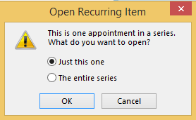
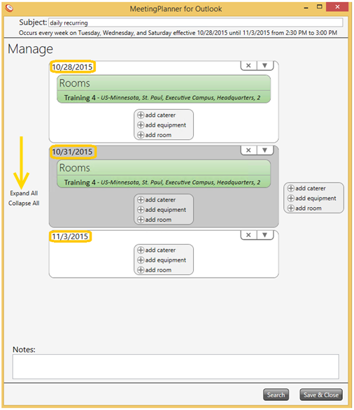

Once the recurring meeting room is reserved, edits can be made to individual meeting dates or the entire recurring series.

Select Expand All to view all meetings in the series.

Note: Edits made to recurring meetings in MP6 are automatically updated in all MP applications.
Note: Edits made to the single occurrence of a meeting (ie. a time change) will be viewed in the single meeting reservation window ONLY.
—or—
select any one of the recurring dates in the series.
Important! Although the room reservation is deleted from the MP6 application, the meeting time and date will remain reserved on the Outlook Calendar. Manually delete the time/date reservation from Outlook.
Note: Single occurrence meetings deleted in MP6 are automatically deleted in all MP applications.
Note: Meetings deleted in MP6 are automatically deleted in all MP applications.
Important! Although the entire series of a recurring reservation is deleted from the MP6 application, the meeting time and date will remain reserved on the Outlook Calendar. Manually delete the time/date of the recurring reservation from Outlook.